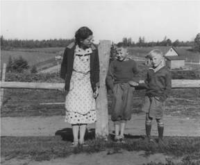

The Family Chronicle
No. 74 June 28, 2004
________________

Lillian (Glendenning) Weeks, Bobby Glendenning (Uncle Guy’s son) and Don Glendenning taken at Little Branch. Believed to have been taken in 1937 when Uncle Guy was in New Brunswick for Venetia’s wedding. (As I recall, my first long pants, other than overalls, were purchased when my Dad died in 1938.)
Orphan Pig Feed
Sometimes a piglet could not or would not suck from its mother. A record book of Walter’s had the following recipe for “orphan pig feed.”
3 pints cow’s milk
2 eggs
¼ tsp salt
1-teaspoon cod liver oil
Keep dishes clean
Walter’s record book
On April 5, 1948, Walter cut his wood - 24 inches for the furnace and 16 inches for the stove. The following comprised the crew:
James A Watling – 1 day
Murray MacNaughton – I day $4.00
Theodore Fowlie – 1 day $4.50
Fraser MacRae – ½ day $2.00
Claude McDonald – 1 day
Cecil McDonald – 21/2 hrs
Norman Glendenning – 1 day
John Glendenning – 1 day
Walter Glendenning – 1 day
Another entry shows shared costs for the woodcutter of:
12 gal. Gas $3.00; 1 gal. Oil $1.25
Another entry shows 43/4 hr at John’s; 43/4 at company pile and 43/4 hrs at own pile. I believe this refers to some wood that John and Walter cut in common, perhaps on Crown land, as well as their own supply.
On October 18, 1948 Walter threshed his grain. The following comprised the crew:
James T. D Watling 3 hrs $5.50
Fraser McRae $2.00
J.D. McRae Returned
Godfreys Returned
John Glendenning
Sterling Cameron Returned
Murray McNaughton pd
Both the above cases illustrate the custom of woodcutting and threshing crews comprised of folk who exchange time as well as those who were paid. Given the amount paid to James T. D. Watling, I wonder if he owned the thresher. Although we shared ownership of a woodcutter with Uncle Jim, we did not have our own thresher. We also shared a stationary engine with Uncle Jim. I think that we used a thresher owned by George Adams, Sr. who brought thresher and engine on a sloven. Sometimes we used our own engine but I cannot recall who provided the thresher.
Margaret (Glendenning) Marsen
The Boothbay Register carried the following on December 27, 1956
Mrs. Margaret Glendenning Marsen, 63, wife of Lucas Marsen, Oven’s Mouth, Boothbay Harbour and Wauchula, Fla. Died at Memorial Hospital, Lakeland, Fla., Wednesday, December 19, following surgical treatment.
Mrs. Marsen, a graduate of Sisters’ Hospital, Lewiston, as a registered nurse, was born in Canobie, New Brunswick. She went overseas in World War I with the Harvard Unit and reenlisted on her return with the Canadian Medical Unit. For a number of years she served as district health worker in Portland.
She is survived by her husband, Lucas, of Florida and a brother Guy Glendenning of Bowling Green, Fla., also numerous nephews and nieces.
The body was returned here and entombed at Ocean View Cemetery to await services and burial in the spring.
A New Cousin
I was delighted to receive a note recently from Jennie Foley who is a second cousin. Her Grandfather, Robert Henry Peters, was a brother to my Grandmother, Elizabeth Peters. Jennie wrote:
“My mother was Eva Peters, who was born in 1917 in Canobie New Brunswick. I am the child of her second marriage to Ernest Walden, an Englishman from Wigston Magna, Leicestershire, whom she met after moving to Hamilton in the late 1940's. My grandmother, Annie (Jago) Peters, came to live with us in 1963 until her death in 1967 at the age of 82. I was born and brought up in the Hamilton area, but benefited from the conversations of my mother and Granny reminiscing about ‘down home'. There were also visits to New Brunswick to see the relatives every so often. My Uncle Johnny Peters was the postman in the Canobie area, and for many years (late '40s to '60s) had a store and gas station opposite the Lower Canobie Road near Lombard's quarry. My maternal grandfather, Robert Henry Peters was a farmer. He was born in 1869, and died in 1947 of heart failure.”
I’ll have more from Jennie’s note in later issues.
Strawberry Season
I write this having just picked and eaten the first 8 strawberries from my garden. I recall the truck coming to our door loaded with strawberries. Mum usually bought a pail – a dollar a pail, as I recall but I know, also, that she always bargained. The strawberries would be hulled, put in the large, round, enameled pan for mixing bread and placed in the basement on the cold floor. (We did not have a refrigerator at the time.) Our dessert that evening was strawberries and cream, usually with a little sugar. Mmmm good. Because we were a large family, a pail of strawberries could be gone the first evening – sometimes there were a few left for the next day.
The Chronicle is an occasional newsletter prepared by Don Glendenning and posted on the family website. It is designed to share information about my family, community and the times in which I grew up. While every effort is made to be accurate, errors are likely to occur. Comments, enquiries and information may be sent to 62 Queen Elizabeth Drive, Charlottetown, PEI, C1A 3A9. Tel: 902-892-5859 Email: don@glendenning.net Web: www.glendenning.net